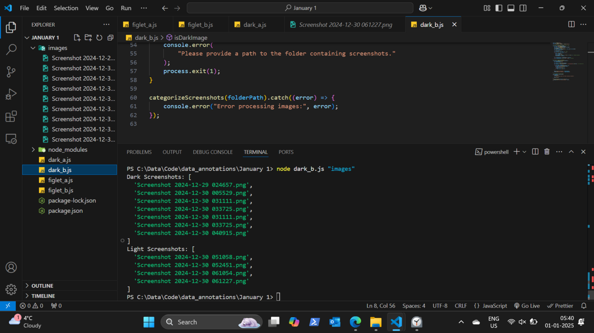

1. L'IA
🟢 · Débutant · Quatre temps : pourquoi l'IA · l'installer · bien lui parler · ce qu'elle fait pour ton trading
Ce que tu sauras faire
- Savoir ce que l'IA fait mieux que toi, et ce qu'elle ne fera jamais à ta place.
- Installer Claude ou ChatGPT, puis ton espace de travail, sans taper une seule commande.
- Écrire une demande qui donne une vraie réponse.
- T'en servir pour apprendre cette ressource, puis pour ton trading.
Définitions
- IA (ici) = un modèle de langage, comme Claude ou ChatGPT. Il lit ce que tu écris et produit la suite la plus probable. Il ne « sait » pas ; il a énormément lu.
- Prompt = ce que tu lui écris. Ta demande, avec son contexte.
- Contexte = tout ce qu'elle a sous les yeux au moment de répondre : la conversation, tes fichiers, tes instructions. Ce qui n'y est pas, elle ne le sait pas.
- Agent = une IA qui peut agir sur ton ordinateur, dans le dossier que tu lui donnes : lire, créer, modifier des fichiers. Avec ton accord.
- Fichier d'instructions = un court fichier que l'IA relit au début de chaque conversation : qui tu es, ce que tu veux, ses règles.
CLAUDE.mdchez Claude,AGENTS.mdchez Codex (l'agent de ChatGPT). C'est sa mémoire de toi. - Tokens = les morceaux de texte que l'IA lit et écrit. Ton abonnement en donne une quantité limitée ; plus une conversation est longue, plus elle en consomme.
- Hallucination = une réponse inventée, dite avec la même assurance qu'une vraie.
- VS Code = un éditeur gratuit, pour ouvrir et relire les fichiers de ton dossier, et parler à ton IA à côté.
1.1 Pourquoi l'IA, et pourquoi en premier
Pourquoi une ressource de trading commence par l'IA ? Parce que c'est le truc le plus Pareto de toute la ressource.
La loi de Pareto, c'est l'idée qu'environ 20 % des efforts produisent 80 % des résultats. Apprendre à te servir de l'IA fait partie de ces 20 % : elle accélère tout ce qui suit.
Tu vas lire beaucoup de notions d'un coup. Tu ne vas pas tout comprendre à la première lecture, c'est normal. Ton IA, elle, est là à 3 h du matin, elle ne se lasse pas de tes questions, et elle t'explique la même chose de cinq façons jusqu'à ce que ça rentre.
Pour autant, elle ne remplace pas ton cerveau. Chacun son rôle :
- Toi : tu décides ce que tu veux, tu choisis ton process, tu juges si c'est cohérent, et tu assumes le trade.
- L'IA : elle explique, elle calcule, elle range, elle code, elle répète sans se fatiguer.
- 01Tu décides
Ton objectif, ton process, ce que tu veux apprendre.
- 02Tu décris
Ton niveau, ta demande, la forme attendue.
- 03L’IA produit
Explication, calcul, fichier, code.
- 04Tu vérifies
Est-ce juste, cohérent, utile ? Sinon tu corriges.
Elle est meilleure que nous sur les calculs : les stats d'un journal, un backtest. Elle est mauvaise pour deviner le prochain mouvement ; elle n'en sait pas plus que toi.
Et le plus gros intérêt est ailleurs. L'IA te pousse à penser en systèmes, en processus clairs. Pour qu'elle t'aide, il faut lui expliquer ce que tu fais, étape par étape ; et si tu n'arrives pas à l'expliquer, c'est que ce n'est pas encore clair pour toi non plus. C'est sans doute le meilleur conseil de toute cette ressource.
1.2 Installer
Trois étapes : l'application, l'éditeur, puis trois prompts à coller. Compte une heure la première fois.
Étape 1 — Choisir et installer l'application
Deux choix, aussi bons l'un que l'autre pour commencer :
| Claude | ChatGPT | |
|---|---|---|
| Entreprise | Anthropic | OpenAI |
| Abonnement conseillé | Pro | Plus |
| Prix au mois | 20 $ | 20 $ |
| L'agent qui travaille dans tes fichiers | Claude Code | Codex |
- Va sur le site officiel (claude.ai ou chatgpt.com) et crée ton compte.
- Prends l'abonnement le moins cher des deux formules payantes, celui à environ 20 $. Inutile de prendre plus au début : tu ne sauras pas encore t'en servir.
- Paie au mois, pas à l'année. L'annuel est un peu moins cher (chez Claude, 200 $ d'un coup, soit environ 17 $ par mois), mais tu t'engages avant de savoir si l'outil te convient, et les offres changent vite.
- Télécharge l'application de bureau depuis la même page, installe-la, connecte-toi.
Étape 2 — Les trois prompts
Ouvre une nouvelle conversation dans l'application, et colle les prompts dans l'ordre, un par un. Attends qu'un prompt soit terminé avant de passer au suivant.
Prompt 1 — Qu'elle te connaisse. Le plus important des trois. Une IA qui ne sait rien de toi répond du générique ; celle-là va te poser des questions jusqu'à avoir le contexte qui compte.
Je débute avec une IA et je veux qu'elle me serve vraiment, en particulier
pour le trading. Avant de me conseiller quoi que ce soit, apprends à me
connaître.
Pose-moi des questions, en français simple, par petits groupes de 3 ou 4.
Commence par les plus utiles (la règle des 20/80 : celles dont la réponse
change le plus la façon dont tu vas m'aider). Couvre au moins :
- ce que je fais dans la vie, mon temps disponible, mon niveau en informatique ;
- mon niveau en trading, mes marchés, mon style, ce que j'ai déjà essayé ;
- mes projets en cours, trading ou non, et celui qui compte le plus ;
- à quoi je veux que tu me serves concrètement : apprendre, tenir un journal,
analyser mes trades, tester une stratégie, coder, m'organiser… ;
- ce qui m'a fait perdre du temps ou de l'argent jusqu'ici ;
- comment je préfère qu'on me réponde (court, détaillé, avec exemples…).
Relance quand une réponse est vague. Arrête-toi quand tu as l'essentiel :
ne me noie pas sous les questions.
À la fin, écris un résumé intitulé « Mon contexte », en une page maximum,
que je pourrai te redonner plus tard. Puis dis-moi les trois façons dont tu
peux m'aider le plus, dans l'ordre.Garde ce résumé « Mon contexte » : il sert au prompt 3.
Prompt 2 — Ton espace de travail. Dans la même conversation.
Maintenant, aide-moi à installer mon espace de travail, une étape à la fois,
sans jamais me demander de taper une commande. Attends que je te dise
« c'est fait » avant de passer à l'étape suivante.
1. Demande-moi si je suis sur Windows ou Mac.
2. Aide-moi à créer UN dossier de travail, facile à retrouver (par exemple
« Trading-IA » dans Documents). Propose à l'intérieur une organisation
minimale adaptée à « Mon contexte » : seulement les dossiers vraiment
utiles, avec leur rôle en une ligne.
3. Guide-moi pour installer VS Code depuis son site officiel, écran par écran,
puis pour y ouvrir ce dossier.
4. Guide-moi pour installer dans VS Code l'extension officielle de l'agent
de mon abonnement (Claude Code pour Claude, Codex pour ChatGPT), et pour
m'y connecter avec mon compte.
5. Propose-moi au plus trois autres extensions ou plugins vraiment utiles
pour débuter, en expliquant à quoi sert chacun. Je choisis ; n'en impose
aucun.
Ne déplace, ne supprime et n'écrase jamais mes fichiers existants.
Termine en me montrant comment ouvrir l'agent dans VS Code.Prompt 3 — Son fichier d'instructions. Celui-là, colle-le dans l'agent, dans VS Code, avec ton dossier ouvert. Ajoute ton résumé « Mon contexte » juste en dessous.
Crée à la racine de ce dossier mon fichier d'instructions (CLAUDE.md si tu es
Claude, AGENTS.md si tu es Codex), à partir de « Mon contexte » ci-dessous.
Montre-le-moi avant de l'enregistrer. Court : une page maximum, en puces.
Il contient :
1. Qui je suis : niveau, marchés, projets, ce que j'attends de toi.
2. Comment me répondre : en français simple ; court par défaut, détaillé si je
le demande ; un exemple quand c'est utile ; dis-le quand tu n'es pas sûr,
et distingue ce qui est vérifié de ce qui est supposé.
3. Comment travailler :
- avant une tâche de plus de quelques étapes, propose un plan court, la
solution la plus simple en premier, et attends mon accord ;
- une étape à la fois ; vérifie que chaque étape marche avant la suivante ;
- ne travaille que dans ce dossier ; ne supprime ni n'écrase rien sans
mon accord ;
- jamais de mot de passe, de clé ni de donnée de compte de trading.
4. Économiser mes tokens et garder de bonnes réponses :
- ne relis que les fichiers utiles à la tâche, pas tout le dossier ;
- pas de longs résumés de ce que je viens d'écrire ;
- quand la conversation devient longue ou change de sujet, propose-moi de
résumer les points clés et de repartir dans une nouvelle conversation ;
- ce que je te répète souvent, propose de l'ajouter à ce fichier.
5. Le trading : ne me donne jamais de signal d'achat ou de vente ; aide-moi
à comprendre, à calculer, à tester et à tenir mon journal.
Termine par un fichier « Bien démarrer » : où sont mes projets, ce que
contient chaque dossier, et comment reprendre notre travail la prochaine fois.
Mon contexte :
[colle ici ton résumé]
La prochaine fois, tu ouvres ton dossier dans VS Code, puis l'agent : il relit ton fichier d'instructions, et tu reprends là où tu t'es arrêté.
1.3 Bien lui parler
Une IA ne lit pas dans tes pensées. Si tu lui donnes peu, elle comble avec du générique.
Compare :
- « C'est quoi la VWAP ? »
- « Je débute en trading. J'ai lu que la VWAP est le prix moyen pondéré par le volume. Explique-moi en cinq lignes pourquoi des gros acteurs la regardent, avec un exemple chiffré simple. Puis pose-moi une question pour vérifier que j'ai compris. »
La première te donne une définition de dictionnaire. La seconde, un cours à ton niveau, et un contrôle.
Six réflexes suffisent :
- Dis qui tu es et ce que tu veux. Ton niveau, ce que tu attends (explication, calcul, correction), et la forme (combien de lignes, un exemple, un tableau).
- Sois précis. Pas « mon calcul est faux », mais « j'attends +0,2R, j'obtiens −0,1R ; voici mes chiffres ».
- Le plan avant l'action. Pour tout ce qui est un peu gros, demande d'abord plusieurs façons de faire, la plus simple en premier. Tu choisis, puis elle fait.
- Une étape à la fois, et vérifie chaque étape. Une grosse demande d'un coup, c'est une grosse erreur d'un coup.
- Montre. Un exemple rempli comme tu le veux, ou une capture annotée de ton graphique (avec le symbole, l'unité de temps, la date et l'heure : elle ne les devine pas).
- Fais-toi interroger plutôt que de tout te faire expliquer. Tu apprends en répondant, pas en lisant la réponse.
Et deux choses à savoir pour que ça dure. Sa mémoire est courte : une conversation = un sujet ; quand elle devient longue, fais résumer et repars à neuf. La confiance se construit : au début, des petites tâches, et tu relis tout. Le dernier mot reste le tien.
1.4 Ce qu'elle fait pour ton trading
Plus tard, quand tu auras les bases des parties suivantes :
- Ton journal et tes chiffres. Donne-lui ton journal, demande ton espérance, ton drawdown, tes meilleurs et pires créneaux. Ce sont des calculs ; elle est meilleure que nous là-dessus.
- Ta stratégie en règles. Écris ta stratégie en « si… alors… », elle t'aide à trouver les trous, puis à la backtester. De la logique et du backtest.
- Tes outils. J'ai construit mon indicateur d'orderflow avec Claude : les gros acheteurs et vendeurs en bulles, et des signaux quand il y a absorption. 3 mois de taff. Et quand je vois un cas intéressant sur mon graphique, je l'écris en note et je la donne à Jarvis, mon assistant IA, pour voir si c'est pertinent. Rien de complexe : juste du backtest, et savoir utiliser l'IA.
- La macro. Tous les matins, Jarvis me prépare un brief macro : ce qui a changé, ce que le marché attendait, ce que ça peut vouloir dire pour les indices.
Ce qu'elle ne fait pas : te donner le bon trade. Pas de bot miracle, pas de groupe de signaux. Si tu lui demandes « long ou short ? », tu auras une réponse, et elle ne vaudra rien. Le prix a toujours raison, pas l'IA.
Exemples
La mauvaise question. « Le NQ va monter demain ? » L'IA répond des généralités sur les taux et la tech, sur un ton sûr. Rien d'exploitable.
La bonne. « Je lis la partie 3 d'une ressource sur l'orderflow. Voici le passage sur l'absorption [collé]. Voici ce que j'ai compris : [ta phrase]. Qu'est-ce qui est juste, qu'est-ce qui manque ? Puis donne-moi un cas fictif à diagnostiquer. » Là, tu apprends.
Erreurs fréquentes :
- Prendre l'abonnement le plus cher, ou à l'année. Celui à 20 $ par mois suffit largement pour commencer.
- Sauter le prompt 1. Sans contexte, tu n'auras que du générique.
- Lui demander un signal. Elle n'en sait pas plus que toi sur le prochain mouvement.
- Croire un chiffre sans source. Demande d'où ça vient ; mesure toi-même.
- La laisser penser à ta place. Si tu ne sais pas expliquer ta stratégie, ce n'est pas ta stratégie.
- Lui donner tout ton ordinateur, ou tes identifiants. Un dossier, rien d'autre.
Transition vers la partie suivante
« Long ou short ? » : la question ne vaut rien posée à une IA. Pour autant, elle ne vaut pas plus posée à toi-même, tant que tu ne sais pas ce qui fait bouger un prix.
Derrière chaque bougie, il y a des gens qui achètent et qui vendent. Qui sont-ils ? Pourquoi ils sont là ? Qu'est-ce qui les fait changer d'avis ? Tant que tu n'as pas ça, un graphique, ce sont des traits.
C'est la partie 2. Et si un passage coince, tu sais maintenant à qui demander.